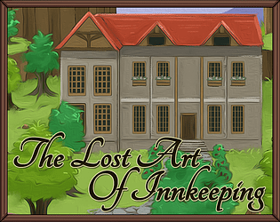

The Lost Art of Innkeeping
The Lost Art of Innkeeping
Detalhes
|  | |
| Tempo de jogo | Não Jogado |
| Última Atividade | Nunca |
| Adicionado | 30/03/2025 23:13:52 |
| Modificado | 30/03/2025 23:15:30 |
| Status de Conclusão | Not Played |
| Biblioteca | Itch.io |
| Fonte | itch.io |
| Plataforma | PC (Windows) |
| Data de Lançamento | 25/04/2020 |
| Pontuação da Comunidade | |
| Avaliação da crítica | |
| Pontuação do Usuário | |
| Gênero | Adventure Indie Role-playing (RPG) Simulator |
| Desenvolvedor | SeaPhoenix |
| Editor | SeaPhoenix |
| Funções | Single Player |
| Links | Official Steam Itch Twitch |
| Tag | [GGDeals] Synced |
Descrição
Update: The sequel, The Hidden Art of Innkeeping, was released on Sep 3, 2024!
You’ve just inherited Cascade Manor from your eccentric aunt, but not only is it in a dismal condition, you have only 30 days to pay off the loan your aunt took out shortly before her death.
You decide to convert the manor into an inn, but while you’re busy trying to satisfy the needs of your unusual and persnickety guests, you discover that there is more to the manor than meets the eye...
Highlights
- Explore the manor and its surroundings, and unlock new rooms and discover new areas.
- Hire an interesting cast of characters to work at your inn.
- Meet a gaggle of guests, including adventurers, inventors, opera singers, fairies, and many others, all of whom have unique personalities and varied preferences.
- Complete mini-quests such as hunting down the ghost haunting the manor, finding coal for the blacksmith, restoring an ancient temple, and more!
- Configure guest rooms, purchase amenities, and upgrade the manor and nearby village to keep your guests happy.
- Design advertisements to attract more guests, but be warned, false advertising will not be taken lightly either by the authorities or your visitors!
- Find items and beautiful paintings that will help you pay off the loan and solve the mystery of Aunt Agatha’s puzzling behavior.
- Replay the game with a New Game+ and discover several exciting new items and guests, and experience different outcomes and multiple endings based on your choices and actions.
- Unlock achievements, master the art of innkeeping, and become the owner of a 5-star inn that caters even to royalty!
Playtime
About 4 hours for one playthrough (multiple endings available).
Note
This game is an extension of my Indie Game Maker Contest 2017 game, The Rock and the Rose (which won 2nd prize!), with many more new items, areas, characters and upgrades, additional gameplay elements, a richer storyline, achievements, higher-resolution artwork, and improved pixel art and UI.
Sequel
The sequel, The Hidden Art of Innkeeping, was released on Sep 3, 2024!
Minimum system requirements
OS: Windows 7, Windows 8 or Windows 10
Memory: 4 GB RAM
Storage: 300 MB available space
Display: 1280x720 or better